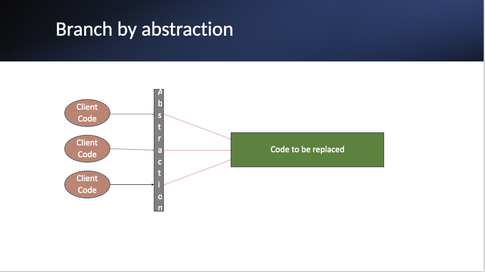
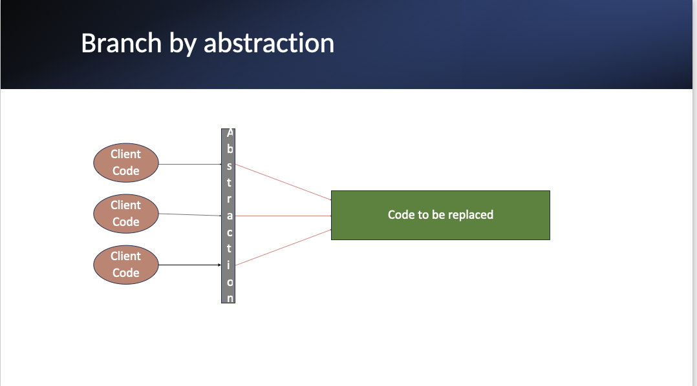
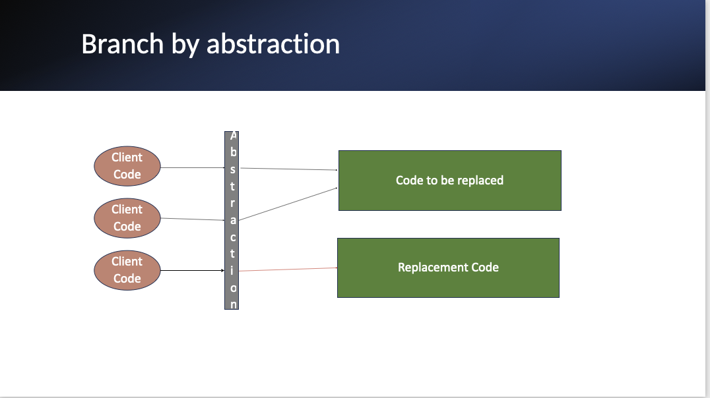

Branch by Abstraction: A Gradual Approach to Code Changes
In the world of software development, making significant changes to your codebase can be a daunting task. Traditional methods like branching in source control or using conditional statements have their drawbacks. Enter "Branch by Abstraction,"[1] a technique that offers a more gradual and manageable approach to implementing large-scale changes.
What is Branch by Abstraction?
Branch by Abstraction is a method that allows you to make substantial changes to your code incrementally, without resorting to long-lived feature branches. This technique was coined by Stacy Curl in 2007 and has since gained popularity among developers seeking a more flexible approach to code refactoring.
In the world of software development, making significant changes to your codebase can be a daunting task. Traditional methods like branching in source control or using conditional statements have their drawbacks. Enter "Branch by Abstraction," a technique that offers a more gradual and manageable approach to implementing large-scale changes.
What is Branch by Abstraction?
Branch by Abstraction is a method that allows you to make substantial changes to your code incrementally, without resorting to long-lived feature branches. This technique was coined by Stacy Curl in 2007 and has since gained popularity among developers seeking a more flexible approach to code refactoring.
The Benefits
- Encourages gradual change
- Allows for continuous integration
- Reduces the risk associated with big bang replacements
- Enables easier rollback if issues arise
How to Implement Branch by Abstraction
Let's break down the process step by step:
Step 1: Introduce an Abstraction
- Create an abstraction layer over the code you plan to change. This is typically done by extracting an interface.
- Update all client code to use this new abstraction instead of calling the old code directly.
- Commit and push your changes. If your build passes, you're good to release.
Step 2: Implement the New Solution
- Develop a new implementation of the abstraction, complete with tests to ensure functionality.
- Commit and push this new implementation. Again, if your build is green, you can release.
- Gradually update client code to use the new implementation (still via the abstraction).
- Commit and push these changes. Release if your build passes.
Step 3: Clean Up
- Depending on how much of the old implementation you've migrated to the abstraction, consider deprecating or safely deleting the original implementation.
- Commit and push these changes. If your build is green, you can release.
- Evaluate whether the abstraction is still necessary. If there's only one implementation or if it feels inelegant, consider removing it.
Conclusion
Branch by Abstraction offers a powerful alternative to traditional branching strategies. By allowing for incremental changes and continuous integration, it reduces risk and increases flexibility in your development process. Give it a try on your next big refactoring project!